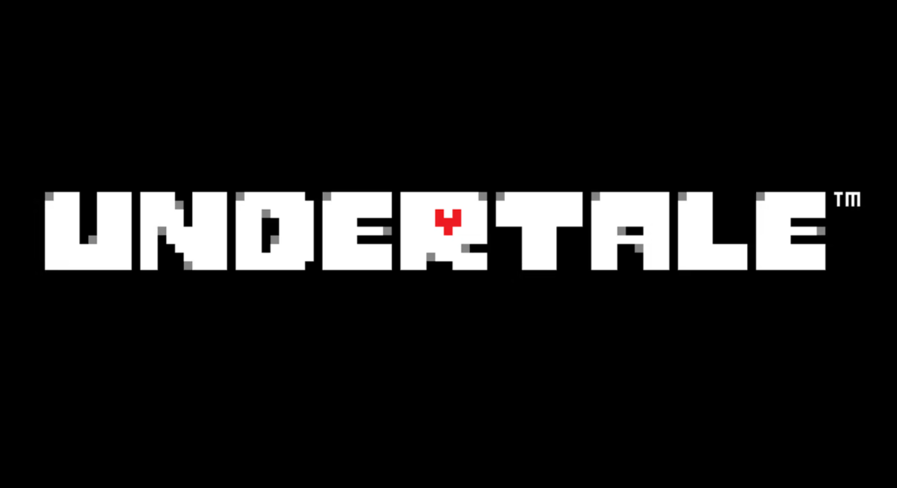
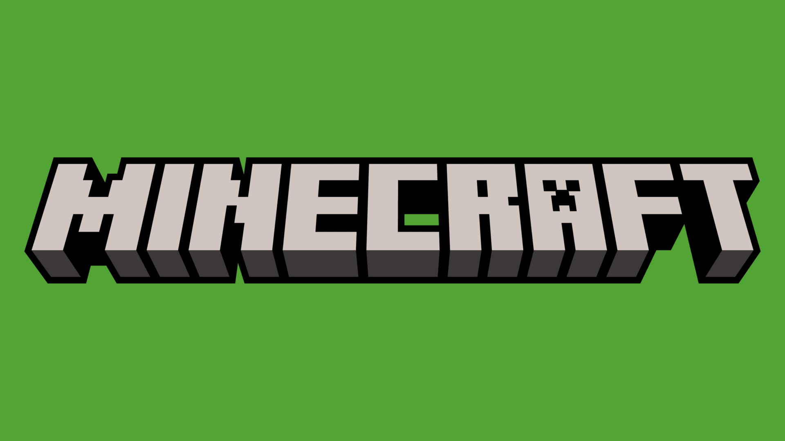
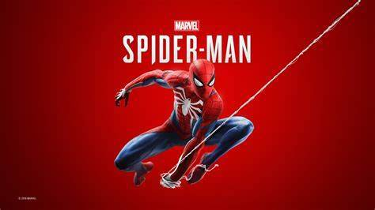

jogo favorito Matheus

undertale é um jogo lançado em 2015 por Toby Fox. Esse jogo conta a história de uma criança humana que caiu no subsolo, o unico objetivo dessa criança é fugir, no jogo você vai conhecer vários personagens que querem te ajudar ou... te matar. a história se divide em 3 rotas, a pacifista, a neutra e a genocida. Na rota pacifista você deve passar o jogo inteiro sem matar ninhguem e fazendo amizade com todos os monstros que você encontrar, na rota neutra você deve apenas jogar o jogo, matando alguns monstros e poupando outros, porém na rota genocida você deve matar todos os monstros e não deixar nenhum vivo.
jogo favorito pedro

minecraft é um jogo que foi lançado em 2011 pela empresa microsoft e foi posteriormente comprado pela microsoft. o jogo não possui uma história, porém nele você pode fazer tudo oque quiser, indo desde apenas construir uma casa ou matar um dragão, o jogo é bem divertido e é bom para todas as idades. você tem varias coisas em que se pode fazer nos infinitos mundos de minecraft e a diversão é basicamente sem fim.
jogo favorito yuri

No jogo "Spider-Man" de 2018, desenvolvido pela Insomniac Games, os jogadores assumem o papel de Peter Parker, que também é o Homem-Aranha. Ambientado em uma Nova York vibrante e aberta, o jogo segue Peter enquanto ele enfrenta uma série de desafios, tanto como super-herói quanto em sua vida pessoal. Ele enfrenta o vilão Senhor Negativo, enquanto tenta equilibrar sua identidade secreta com responsabilidades cotidianas. A narrativa explora temas de poder, responsabilidade e as consequências de escolhas pessoais e heroicas.